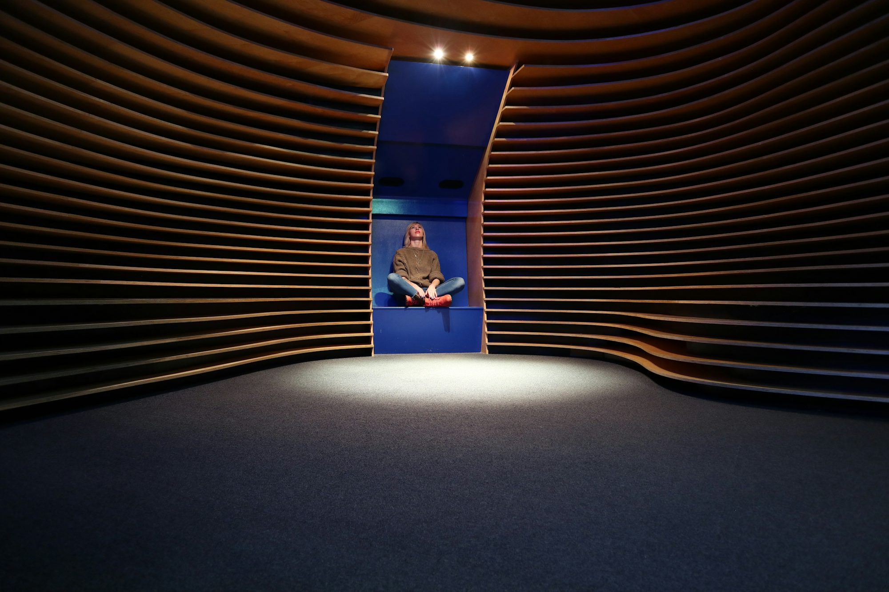
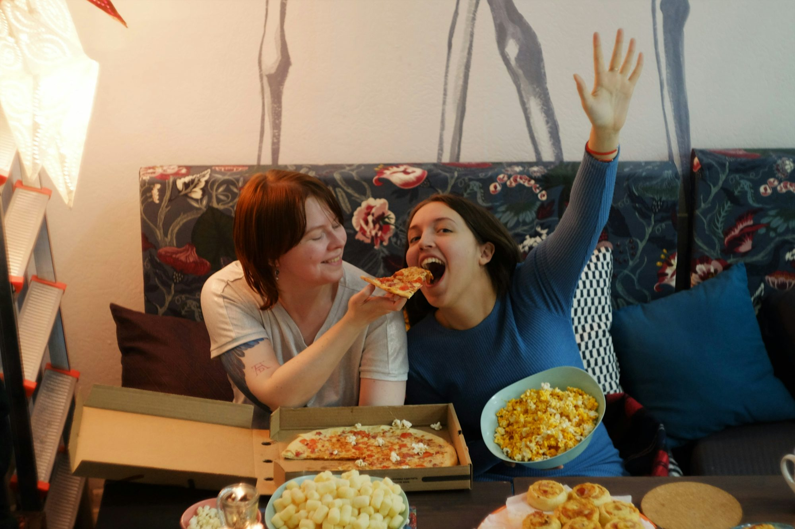
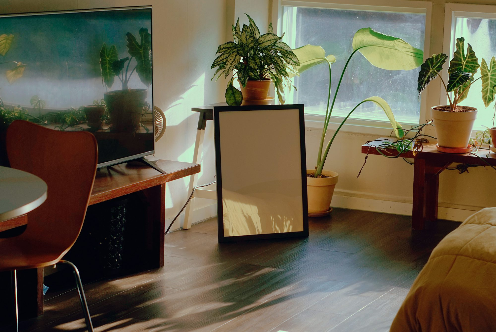

How to Plan the Perfect Themed Party: Creative Ideas for Every Occasion
This article provides a comprehensive guide to planning and hosting a themed party. From choosing the perfect theme to creating unforgettable decorations and activities, this guide helps you throw a party your guests will never forget.Panorama

Content vault
25-02-28
Lucas Ramirez
Creating Memorable Holiday Parties: Tips and Ideas for Festive Celebrations
Discover essential tips and creative ideas to host unforgettable holiday parties, from decorations to activities that will delight your guests.
Liam Johnson

25-02-07
Clara Nguyen
Unveiling the Wonders of Museums: A Journey Through Time and Culture
This article explores the multifaceted roles of museums in society, highlighting their importance in education, cultural preservation, and community engagement.

25-07-24
Liam Johnson
Creating the Ultimate Dance Party Experience
Explore tips and ideas for hosting an unforgettable dance party that will keep guests moving and grooving all night long.
25-05-01
Oliver Chen
The Enchanting World of Art Museums: A Journey Through Creativity
An exploration of art museums, highlighting their role in preserving artistic heritage, inspiring creativity, and fostering appreciation for the arts.

25-11-28
Oliver Chen
25-09-30
Sophia Martinez
25-08-14
Emma Walker
The Art of Mindful Eating: How to Cultivate a Healthy Relationship with Food

Sarah Thompson
The Art of Home Entertainment: How Streaming Services and Smart Technology Are Changing the Way We Watch Movies
An exploration of the evolution of home entertainment, focusing on how streaming services, smart technology, and home theaters are revolutionizing the movie-watching experience.
25-04-01
Emma Thompson
The Art of Cooking: A Journey Through Culinary Creativity
This article explores the joy of cooking, highlighting its benefits for personal well-being, creativity, and connection with others.
